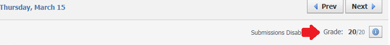
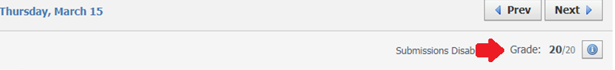

The Science Chemistry Unit is one Unit I really enjoyed learning and participating in. The purpose of this project (or Driving Question, DQ), was: How chemical reaction work, & how we know they happened. We learned about microscopic particles, atoms, molecules, pure substances, mixtures, chemical reactions, and more. One of the things I enjoyed most was doing the experiments, if I hadn't done them before, I would be very curious to see what happened. I also enjoyed watching documentaries, they were funny, informative, and entertaining.
Science Chemistry Unit
Reflective Commentary
b. What I liked about this project were the documentaries & experiments. They really strengthened my understanding of the material.
c. If I had more time on this project, I would watch more documentaries to really reinforce what I was learning.
d. In this unit, we wrote many CERs (Claim, Evidence, & Reasoning)/Scientific Arguments. CERs will help us in the Real World when we have to state an argument or prove something, like making a law.
These tests below show my growth, they are the Chemistry Pre-Test (took before we started the unit to see what we knew) and the Post Test (took after the unit, this one was graded, unlike the Pre-Test, because we were expected to know all the material). On the Pre-Test I didn’t do too well (since I didn’t know much). But after the Unit, I got a 100% on the Post Test, because I learned everything thoroughly.
 
